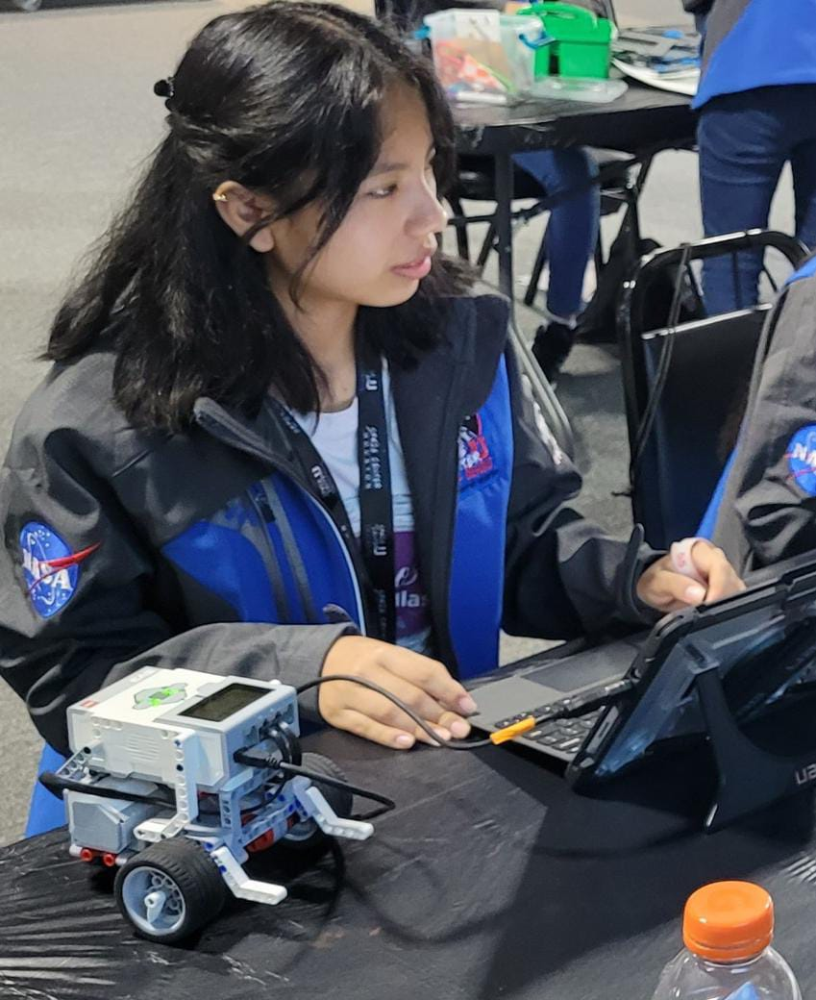
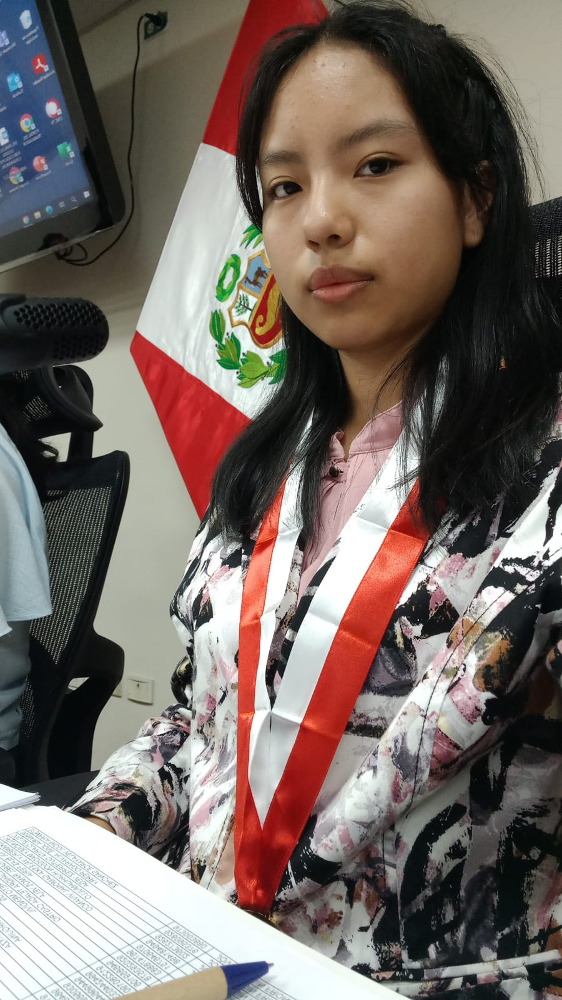

¡Bienvenido a mi Blog Personal!
Esta es una breve presentación y bienvenida a mi espacio digital donde comparto mi trabajo y conocimiento.
Sobre mí

Mi nombre es Andrea Belén Huaranga Reyes tengo 20 años. Naci en Huancayo, creci en Chaclacayo - Lima por 18 años, y actualmente vivo en Rio Negro -Satipo. Soy estudiante de Ing. Software con IA en la institucion "Senati".
Proyectos
Aqui te mostrare algunos de mis proyectos:

"Tripulante peruana(She is 2022) Space Center-Nasa"
Fui seleccionada como una de las 14 tripulantes peruanas a nivel nacional por medio de She Is foundation (Colombia), en la cual tuvimos 4 meses de clases virtuales para luego realizar por una semana la Inmersion al Space Center - Nasa.

"Parlamentaria escolar 2023"
Participe en el programa realizado por el congreso de la nación, en la cual tuvimos sesiones de capacitaciones para luego realizar simulaciones, en aquella oportunidad me toco ser secretaria de la comision de "Mujer y familia".
Habilidades
Mis habilidades son:
- Resiliente
- Iniciativa
- Comunicación efectiva
- Resolución de problemas
- Trabajo en equipo
Experiencia
Historial profesional o académico:
En mi querida Institución termine mi seundaria completa - desde 1ero de secundaria hasta 5to de secundaria, cual me permitio participar y ganar en varios, programas y proyectos academicos como: Eureka, examen Cambridge, Arguedas,etc. Con docentes altamente calificados, en compañia de mis compañeros que recuerdo con tanto cariño.

Actualmente me encuentro cursando mi carrera tecnica en el Instituto Superior de Senati sede Rio Negro - Satipo, en la cual estoy en la carrera de Ingenieria de Software con IA.

Contacto
¿Quieres trabajar conmigo o hacerme una consulta? Puedes encontrarme en:
📧 Correo Electrónico: anhuarangareyes635@gmail.com
📞 Teléfono: +51 998 123 455
🌐 Redes Sociales: Instagram